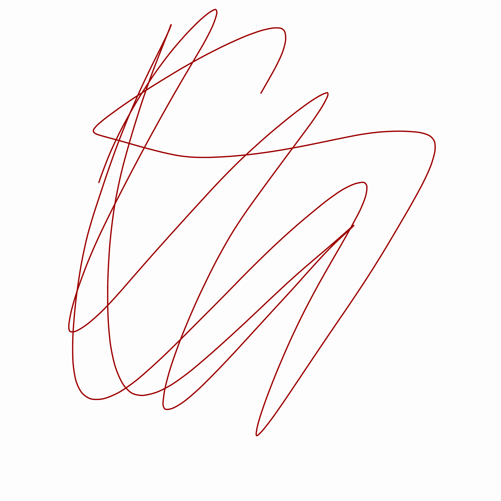
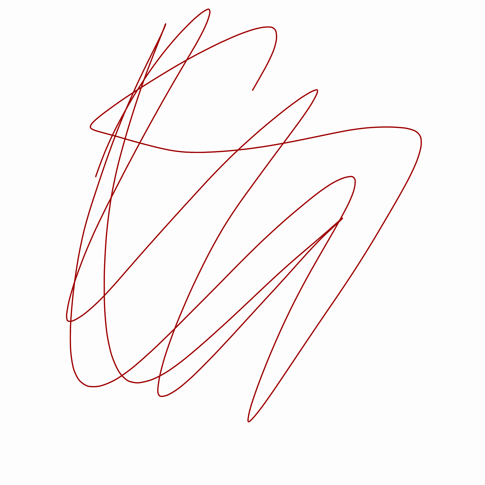

Paulina Arias es una artista multimedia cuyo acercamiento al arte surge de una profunda necesidad de expresar su sensibilidad y explorar temas que le apasionan. Entre estos temas se encuentran la violencia de género, motivada tanto por sus propias experiencias como por su empatía hacia las vivencias de otras mujeres, y el antiespecismo, donde busca abordar la violencia hacia los animales.
Con una amplia gama de afinidades artísticas, que van desde las expresiones plásticas hasta las digitales, Paulina busca constantemente formas de transmitir sus ideas a través de estilos y enfoques estéticos diversos. A través de elementos visuales, colores vibrantes y movimientos cautivadores, crea piezas digitales que no solo cautivan la vista, sino que también generan una conexión emocional con el espectador.
Paulina ha tenido la oportunidad de participar en un concierto de live coding en el Teatro Casa de la Paz de la UAM, donde pudo trabajar y experimentar con visuales.